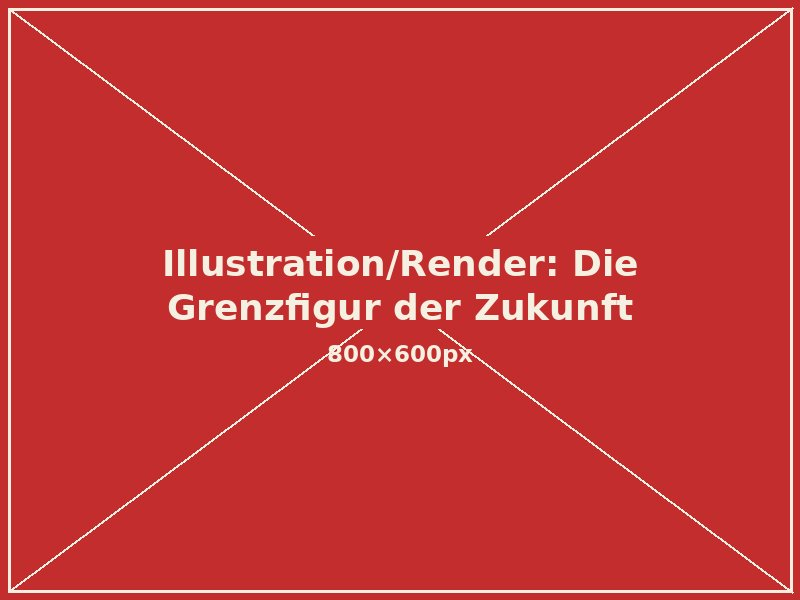
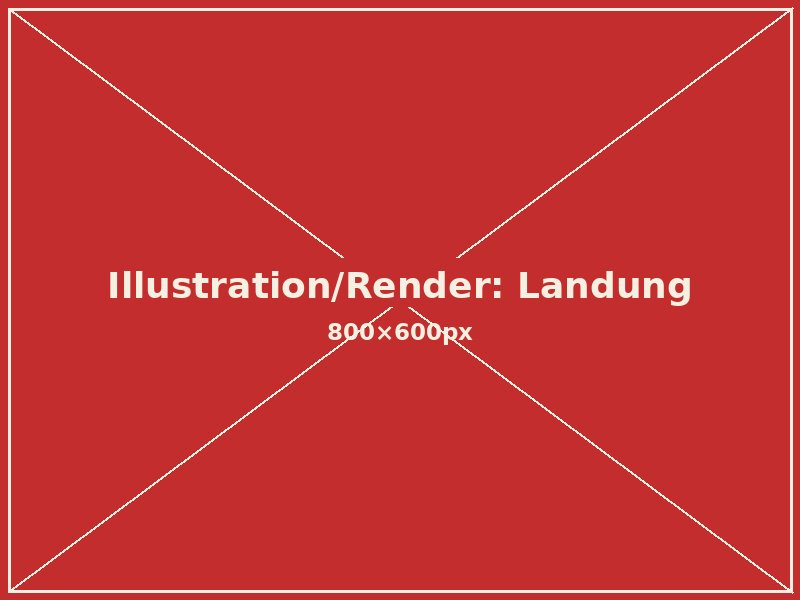
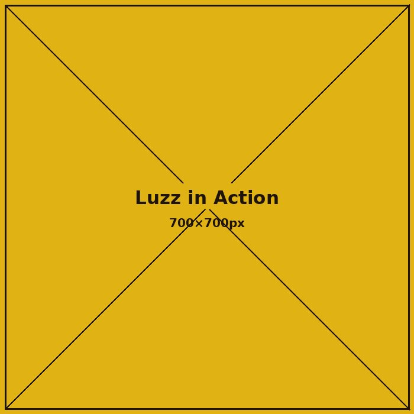
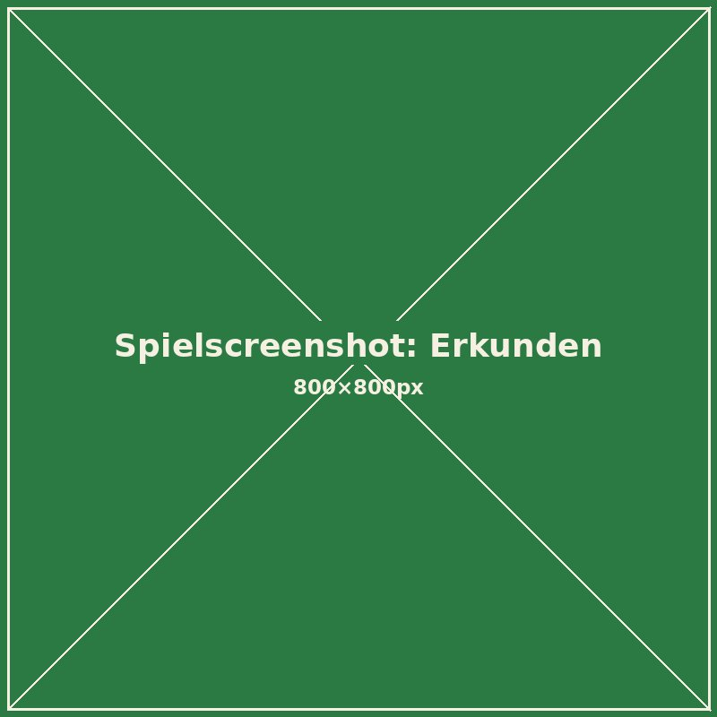
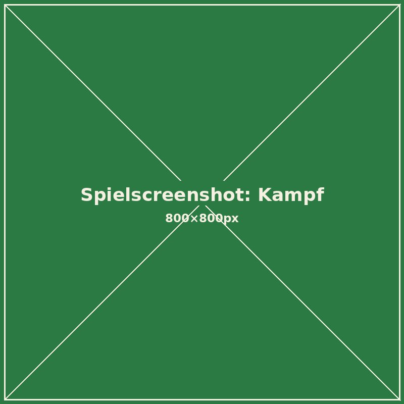
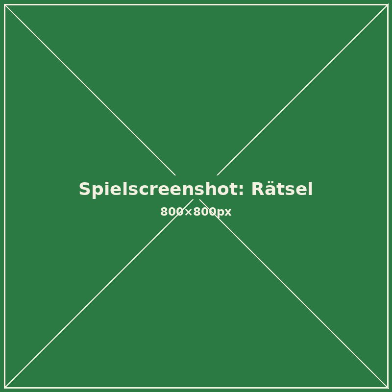
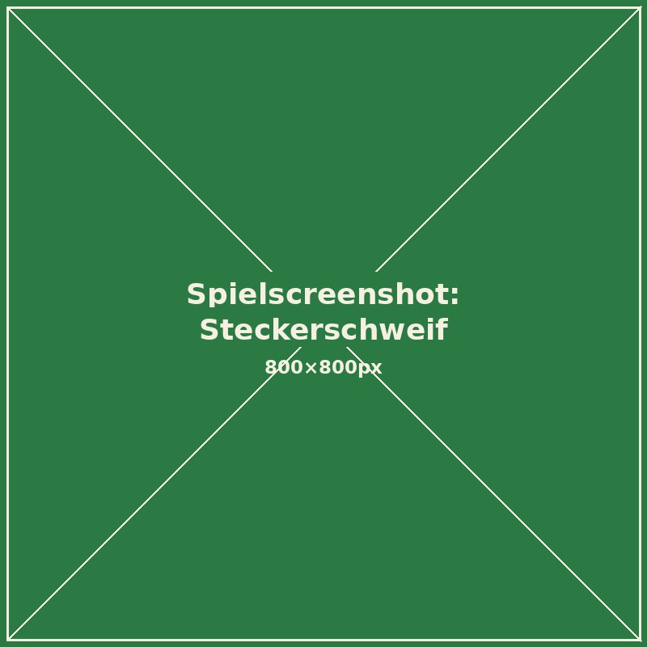
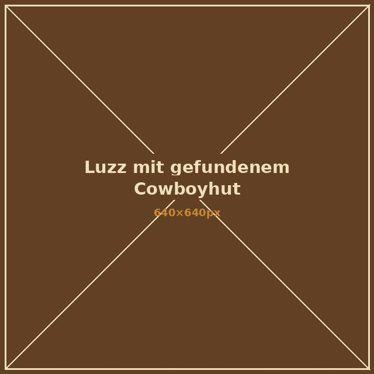

Die Grenzfigur der Zukunft
Story

Die Grenzfigur der Zukunft

Landung
Galerie
Luzz Biteyear stürzt unfreiwillig auf einem fremden Wüstenplaneten ab – irgendwo zwischen Canyon und Sternenstaub. Mit seinem Steckerschweif erkundet er die Umgebung, dockt an alte Technik an und lernt so Schritt für Schritt neue Fähigkeiten, die er braucht, um weiter vorzudringen.




Features




Trailer
Bewertungen
„Endlich eine Spielewebsite, bei der ich auf einen Blick sehe, worum es geht: USK 12, klar erklärt, kein Werbe-Schnickschnack. Mein Sohn liebt Luzz, und ich weiß genau, was ihn erwartet.“
Nina M. · Mutter, 43
„Hat mich sofort an meine alten Zelda-Nachmittage erinnert – nur mit einem Roboter-Fuchs mit Kabelschweif statt Schwert. Kleines Studio, große Liebe zum Detail.“
Jonas R. · 36, kennt jedes Zelda seit 1998
